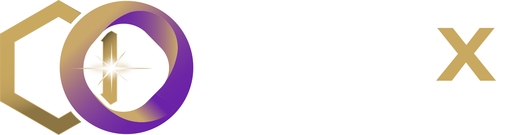

IntegritUS
Una solución del ecosistema SyborX que se prepara para su liberación bajo el modelo SaaS.


UNA PROPUESTA PARA PINTURAS JM
La fuerza de tu operación.
La precisión de un ecosistema propio.
Una plataforma para conectar
CEDIS, sucursales y clientes.
Un CEDIS. Once sucursales.
Una operación conectada.
La siguiente etapa de Pinturas JM necesita visibilidad desde la llegada de la mercancía hasta el último ticket. Y herramientas que acompañen el oficio, sin complicar el trabajo.
Diseñaremos interfaces distintas para cada responsabilidad: simples en mostrador, guiadas en almacén y completas para la dirección.
Explora los puntos de control de la operación propuesta.
Selecciona un módulo para explorar su alcance y su arquitectura propuesta, bloque por bloque.
Diseño web alineado a Pinturas JM, catálogo, carrito y solicitudes de pedido. El personal accede desde la web al portal autenticado, con la vista que corresponde a su rol y sucursal.
Explorar la propuesta web ↗PINTURAS JM / WEB COMERCIAL
Tu marca,Esquema de alcance · No representa una integración ya implementada.
SEMANAS PROPUESTAS
+ 30 días de estabilización
Cinco etapas conectadas, demostraciones periódicas y un piloto antes del despliegue. Explora cada entrega.
Calendario propuesto. Las etapas se traslapan; las fechas se acuerdan al formalizar el inicio, los insumos y los responsables.
Diseño, desarrollo, web vinculada al portal, pruebas, migración acordada, capacitación y despliegue.
Hasta 40 horas mensuales de servicio, monitoreo y mantenimiento correctivo/evolutivo dentro de esa bolsa.
INICIA AL CONCLUIR LA GARANTÍAServidores físicos o virtuales, nube y hospedaje no están incluidos en el desarrollo ni en el mantenimiento. Se podrán cotizar según las necesidades del proyecto.
Los pagos suman el 100% de la inversión de desarrollo. Los hitos se revisan contra criterios de aceptación; no se presume aceptación por silencio.
Una propuesta clara también define sus límites. El borrador completo conserva todos los supuestos, entregables y condiciones.
Leer versión completa ↗Sin RH, nómina, asistencia, expedientes, pólizas, COI, cuentas por pagar avanzadas, conciliación bancaria automatizada, estados financieros o declaraciones. Se mantienen los controles operativos de cortes, costos, crédito y facturación descritos. El acceso beta a IntegritUS y al sistema de RRHH se ofrece como beneficio independiente del ecosistema SaaS.
Conocer beneficios beta ↗Equipos, redes y servidores no incluidos. La conexión directa a básculas, dosificadoras, mezcladoras, espectrofotómetros y terminales se cotiza tras verificar compatibilidad. Tampoco incluye pasarela de pago, app nativa, telefonía o conectores de mensajería externos.
30 días de estabilización y 90 días de garantía por defectos desde la aceptación final. Mantenimiento de $30,000 + IVA al mes, al concluir la garantía, con hasta 40 horas de servicio. Primera respuesta crítica objetivo: cuatro horas hábiles en el horario acordado; no implica resolución garantizada ni atención 24/7.
Base: un CEDIS, 11 sucursales y unas 5,000 referencias. Antes de contrato se confirman cajas, usuarios, RFC y PAC. JM aporta un responsable, datos depurados, fichas técnicas y conteo de apertura. La migración e históricos se delimitan por escrito.
Repositorio, manuales y documentación incluidos. Cesión del desarrollo específico al liquidar, con condiciones en contrato y licencias de terceros vigentes. Ampliaciones requieren aprobación escrita. Vigencia propuesta: 30 días desde la emisión final; esta versión es un borrador para revisión.
Infraestructura, PAC y timbres, dominios, licencias, APIs y consumo de IA se presupuestan por separado. La vista RGB no equivale a una fórmula física. Operación offline del POS no garantiza autorización bancaria ni timbrado sin conexión.
Acceso anticipado y condiciones preferenciales para acompañar la siguiente etapa de Pinturas JM.
Una solución del ecosistema SyborX que se prepara para su liberación bajo el modelo SaaS.
Sistema independiente de control de RRHH, también en pruebas previas a su liberación comercial como SaaS.
SaaS significa Software as a Service: utilizar el software por internet mediante una suscripción, con actualizaciones y mantenimiento gestionados por el proveedor, en lugar de adquirir el desarrollo completo del producto.
Friends & Family es una fase de prueba con un grupo cercano y limitado de usuarios y aliados. Preproducción significa que los sistemas aún se prueban y ajustan antes de su liberación comercial.
La beta permite evaluar funcionalidades y aportar retroalimentación. No implica una fecha de liberación comprometida ni la disponibilidad de todas las funciones comerciales.
Si se concreta la negociación de este proyecto, podrán acceder a las etapas beta de ambos sistemas y contar con costos preferenciales como clientes de SyborX. El calendario, las funcionalidades y las condiciones de participación se comunicarán conforme avance cada programa. Las tarifas se definirán en una propuesta específica.
Servicios independientes: las suscripciones SaaS se contratarán por separado y no están incluidas en el desarrollo de $3,000,000 MXN + IVA ni en su mantenimiento de $30,000 MXN + IVA mensuales. Contabilidad y RRHH permanecen fuera del alcance del desarrollo a la medida.
Próximo paso: revisar el alcance, cerrar el anexo contractual y acordar el inicio.